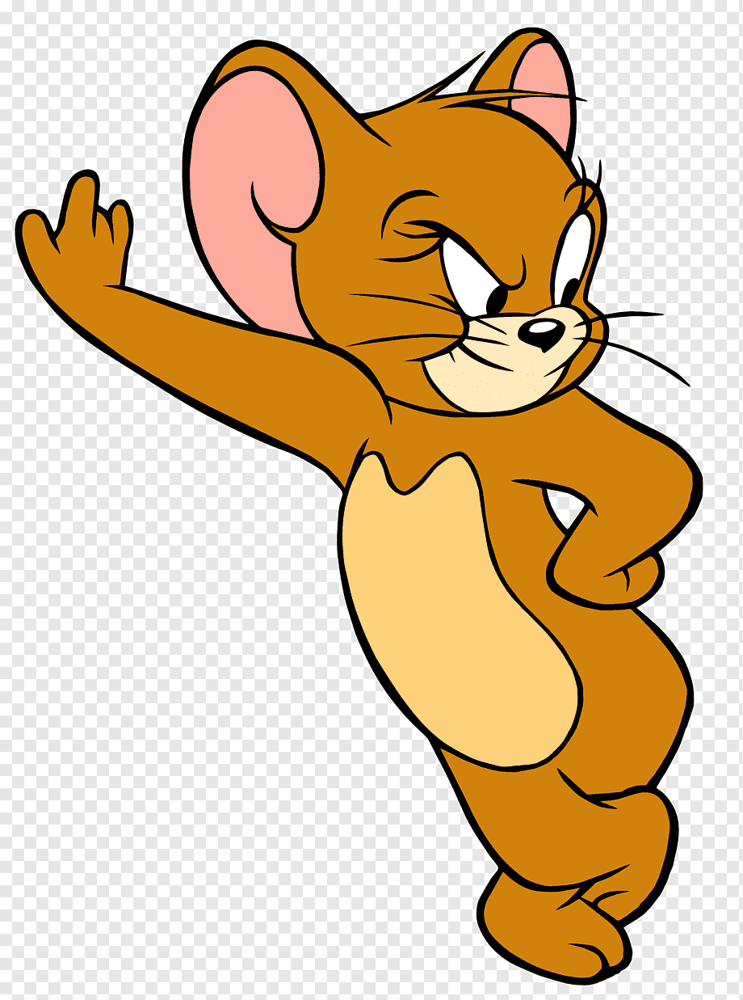

Causas y Consecuencias del Cambio Climático/Contaminación Ambiental
Causas
- Emisiones de gases de efecto invernadero derivadas de la quema de combustibles fósiles como el petróleo, el carbón y el gas natural.
- Deforestación y degradación de los bosques, lo que reduce la capacidad de absorción de dióxido de carbono.
- Uso intensivo de la agricultura y ganadería, que produce gases de efecto invernadero y contribuye a la pérdida de biodiversidad.
- Contaminación industrial y de desechos, que liberan gases contaminantes y afectan la calidad del aire y el agua.

Emisiones de gases de efecto invernadero: Las actividades humanas, especialmente la quema de combustibles fósiles como el carbón, el petróleo y el gas natural, liberan grandes cantidades de dióxido de carbono (CO2) y otros gases de efecto invernadero a la atmósfera. Estos gases atrapan el calor del sol en la Tierra, causando un aumento de la temperatura global, conocido como calentamiento global. Deforestación: La eliminación de grandes extensiones de bosques y selvas contribuye al cambio climático. Los árboles y las plantas absorben el CO2 de la atmósfera como parte del proceso de fotosíntesis. Al reducirse la cantidad de vegetación, se pierde una importante forma de absorción de CO2, lo que contribuye al aumento de los niveles de gases de efecto invernadero. Agricultura y ganadería: La agricultura intensiva y la cría de ganado, especialmente en grandes cantidades, generan emisiones significativas de gases de efecto invernadero. La producción de cultivos como el arroz y el ganado bovino produce metano, otro gas de efecto invernadero potente. Además, la deforestación para la expansión de áreas agrícolas y ganaderas también contribuye al cambio climático. Industrialización y quema de combustibles fósiles: El crecimiento de la industrialización a nivel mundial ha llevado a un aumento en la quema de combustibles fósiles para generar energía, alimentar vehículos y operar maquinaria. Estas actividades liberan grandes cantidades de gases de efecto invernadero a la atmósfera, contribuyendo al calentamiento global.
Consecuencias
- Aumento del nivel del mar, lo que amenaza a las zonas costeras y las islas.
- Mayor frecuencia e intensidad de fenómenos meteorológicos extremos, como tormentas, inundaciones y sequías.
- Pérdida de biodiversidad y extinción de especies debido a cambios en el hábitat y las condiciones climáticas.
- Alteraciones en los ecosistemas y disrupción de los servicios ecológicos esenciales para el bienestar humano.

Aumento de la temperatura: El calentamiento global es una de las consecuencias más evidentes del cambio climático. Las temperaturas promedio están aumentando en todo el mundo, lo que provoca cambios en los patrones climáticos, olas de calor más intensas y frecuentes, y un mayor derretimiento de los casquetes de hielo y glaciares. Cambios en los patrones de precipitación: El cambio climático altera los patrones de lluvia y nieve, lo que resulta en sequías más intensas y prolongadas en algunas regiones y en eventos de precipitaciones extremas en otras. Estos cambios pueden tener impactos significativos en la disponibilidad de agua dulce, la agricultura, la biodiversidad y los ecosistemas. Elevación del nivel del mar: El derretimiento de los glaciares y la expansión térmica de los océanos debido al aumento de la temperatura están provocando un aumento en el nivel del mar. Esto representa una amenaza para las comunidades costeras y las islas bajas, aumentando el riesgo de inundaciones costeras, erosión y pérdida de hábitats costeros. Pérdida de biodiversidad: El cambio climático tiene un impacto significativo en los ecosistemas y la biodiversidad. Las especies enfrentan desafíos para adaptarse a los cambios rápidos en el clima, lo que puede resultar en la alteración de los patrones de migración, cambios en la distribución de especies y, en algunos casos, la extinción de especies.
Casos Impactantes en Nuestra Sociedad sobre el Cambio Climático
Caso 1: El desastre de Chernobyl
El desastre de Chernobyl, ocurrido en 1986 en Ucrania, fue el peor accidente nuclear de la historia. La explosión del reactor liberó una gran cantidad de radiación, causando graves daños ambientales y afectando la salud de las personas que vivían en la zona.
 >
>
Caso 2: Derrame de petróleo en el Golfo de México
En 2010, se produjo un derrame de petróleo en el Golfo de México debido a la explosión de la plataforma petrolera Deepwater Horizon. Este desastre causó una enorme contaminación marina, afectando la vida marina y los ecosistemas costeros.

Caso 3: Contaminación del río Citarum
El río Citarum en Indonesia ha sido considerado uno de los ríos más contaminados del mundo. La industria textil y otros sectores han vertido desechos tóxicos en el río durante décadas, causando graves problemas ambientales y afectando la salud de las comunidades locales.
Caso 4: Contaminación del aire en Pekín
Pekín, la capital de China, ha enfrentado graves problemas de contaminación del aire debido a la alta concentración de contaminantes atmosféricos, como las emisiones de fábricas y los gases de escape de los vehículos. Esto ha tenido un impacto negativo en la salud de la población y en el medio ambiente.
Tipos de Contaminación Ambiental en Latinoamérica y en el Mundo
Contaminación ambiental en el Mundo
Contaminación ambiental en Latinoamérica
La contaminación ambiental tiene graves consecuencias para nuestro planeta. Este video ofrece una breve introducción sobre el tema.
Nosotros
Alexandra Aliaga

Abigail Jara

José Tapia

Renzo Flores
Somos un grupo de estudiantes del Colegio María Alvarado del Cuarto grado A de Secundaria que tiene como objetivo informar a todo el público en general sobre esta problemática la cual es el medio ambiente. Explicaremos de forma concreta cual es su efecto en nuestra sociedad y cómo podría afectar a futuro , por lo que nosotros hacemos un llamado a realizar una reflexión sobre este tema y estar más atentos para controlar toda esta problemática.